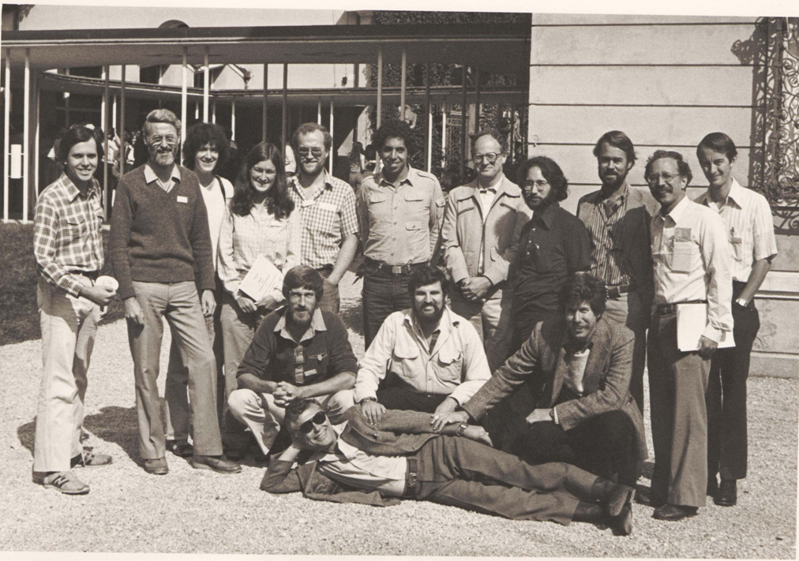
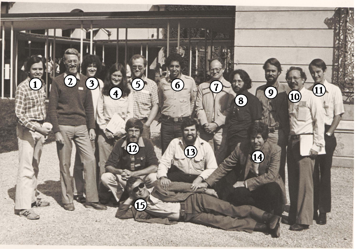

Thanks to Stephen Alexander for contributing the picture.
|

|
|
|  |
1. James Morrissey 2. Peter Newell 3. Fiona Ross 4. Isabel Mullins 5. Stuart McRobbie 6. Ed Berger 7. Herbert Ennis 8. Karl Saxe 9. William Loomis 10. Eugene Katz 11. Randall Diamond 12. Jakob Franke 13. Richard Kessin 14. Stephen Alexander 15. Maurice Sussman |